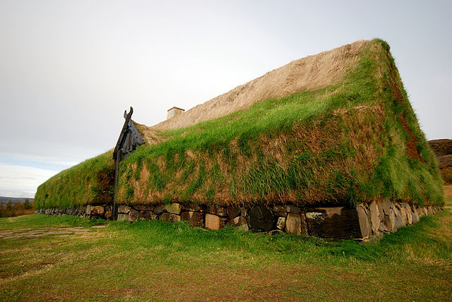
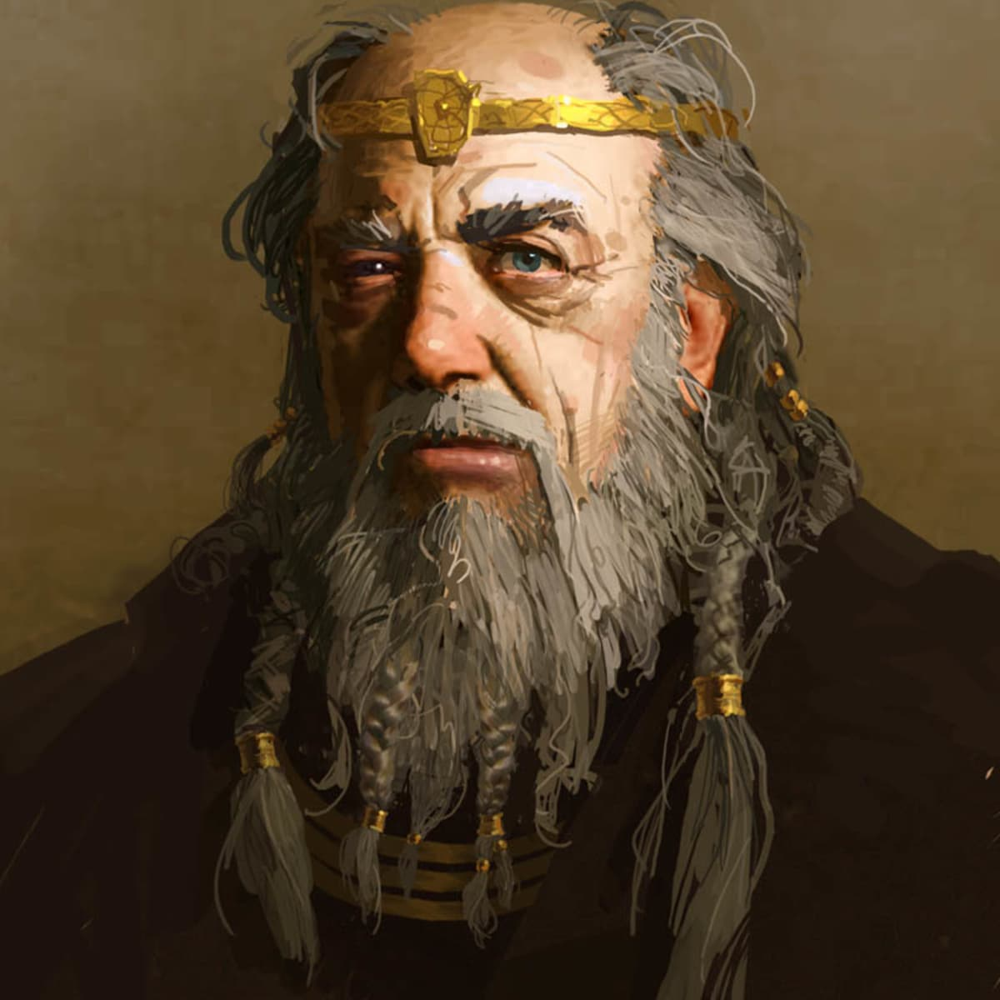
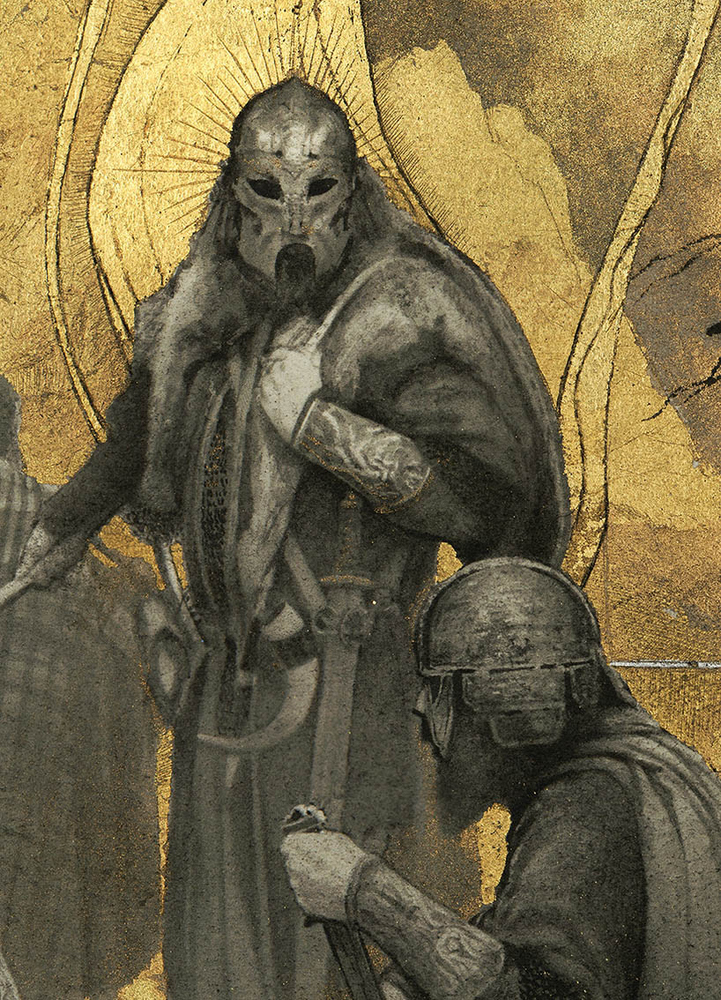
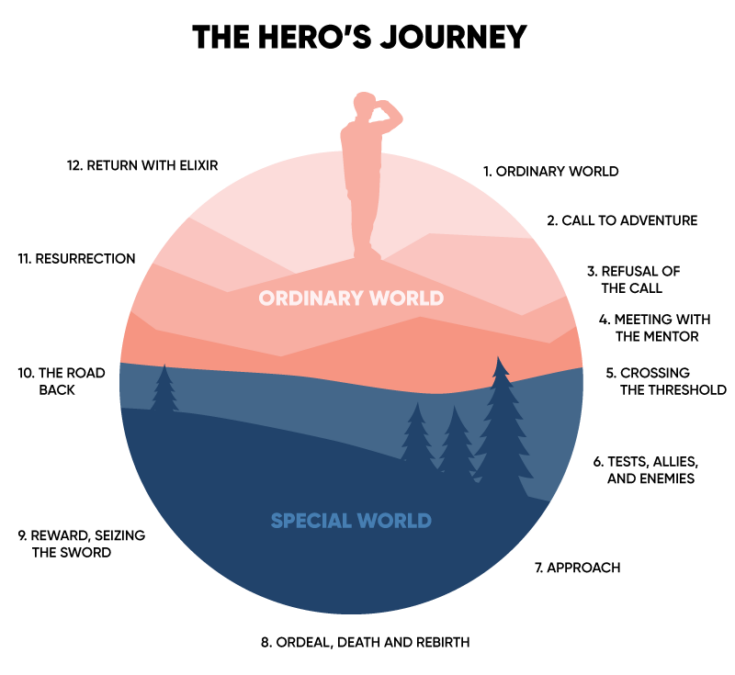
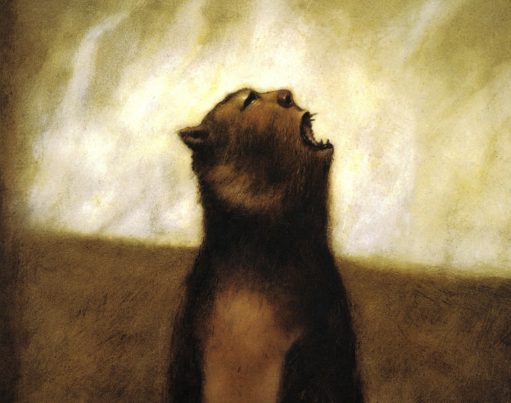

Beowulf is a relic of pre-Anglo-Saxon Scandinavian culture, and the oldest known
work of literature in the English language. It is an epic poem written between
the years 700-900 AD by an unknown poet commonly referred to as
'The Beowulf Poet' out of convenience.
The peom was originally written entirely in Old English, which looks and sounds
completely different from the language that we know now:
Hwæt! We Gardena in geardagum, þeodcyninga, þrym gefrunon, hu ða æþelingas
ellen fremedon.
The near ancient poem serves to provide not only its literary complexities,
but also its massive cultural and historical impact given its impressive age.
- SUMMARY -

The poem begins following a the Danish High King Hrothgar, and his
newly constructed longhouse in which he and his men often celebrate.
However, the frequent commotion irritates and attracts a vicious creature
called the Grendel, which makes a habit of attacking the longhouse and
snatching and killing men.

It is here that Beowulf enters the scene, and
proves his reputation as the great hero he is, and slays the Grendel.
However, this upsets the monster's mother, and the even more garish beast
attacks Beowulf providing an even more perilous challenge. However, Beowulf
prevails and slays the Grendel's mother in an intense underwater battle.
Beowulf returns to his home of Götaland and is installed as king, where he
rules wisely for many years. However, as he nears the end of his life a vicious
dragon attacks his kingdom. He ventures out with a few of his men and slays
the dragon with only his might. However, he suffers a mortal wound from
the dragon, and later succumbs to its venom. Beowulf is then laid
to rest in a barrow overlooking the sea and celebrated as a hero for all time
to come.

- SIGNIFICANCE -
Beowulf lends great significance to the literary world beyond just its
position as the oldest known literary work in the English language.
Beowulf is the basis for the common literary trope of "the hero's journey", about a
righteous character who can do no wrong and lose no battle voyaging across the land
slaying beasts, learning a lesson and bringing a happy ending.

Beowulf is established as a
renowned hero and soldier sent to aid High Hrothgar, slays the Grendel, learns the valuable lesson
that each Grendel has a mother, and returns to Götaland to live happily ever after (and even slay a dragon).
While not the most inherently complex work, Beowulf finds relevance outside of its text in
the moral that it teaches and the cultural impact that it has had.
- LITERARY EXAMPLE -
The novel Grendel by American author John Gardner retells the tale of Beowulf from the perspective of
the Grendel, describing the tale of a peaceful monster whose home is invaded and destroyed by the
destructive and boisterous humans, and is forced to retaliate.

In the text, Beowulf and Hrothgar's men are painted as the villains, forcing the reader to consider the perspective of not
just the Grendel, but the other supporting characters and 'villains' in such "hero's journey" novels.
Villains are frequently characterized as inhuman, in this case with the Grendel's grotesque and beastlike appearance.
The novel ends with the Grendel alone in its den as it slowly succumbs to the mortal wound it sustained from Beowulf,
and questions what ever it could have done to deserve this cruel fate. In the end, despite
everything that the Grendel had done, it was more human than any of the soldiers that fought
against it.